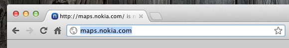

A lazy loading solution on the edge between very clever and incredibly mad.
Massimiliano Marcon (@mmarcon)
July 31, 2012
The Challenge
- The amount of code the browser loads affects performance...
- ... and influences the perceived loading time
- Ideally we want to have less code to load.
More code
- Higher transfer time
- More time to parse it
Is all that code really necessary?
- Do we need all that code to bootstrap?
- Couldn't we lazy load part of it instead?

BUT
When is the right time to lazy load code? How late is later?
The Whole Story
I, as a user...
... open my browser, and start typing a URL in my address bar.
ASAP
Only load the minimum amount of code that is required to bootstrap the application.
“Nice, this application is quite fast...„
Now we can start enriching the application and lazy-load other features.
Ideally we only want to load the code to bootstrap the features. For features that are not there until the user clicks on something, it is non-sense to download everything in advance. It would be a waste of bandwidth.
How can we make it better then?
We could load some portions of the code on demand,
i.e. only when a function is invoked or an object is actually needed.
Wow. This sounds somehow hard...
Nope!
jQuery plugins on demand
- jQuery On Demand can be used to lazy-load on demand other jQuery plugins.
- With a little trick this happens with no changes to existing code
How?
(function(){
var functions = ['accordion', 'dialog', 'tabs',
'datepicker', 'slider', 'progressbar'];
functions.forEach(function(f){
$.fn[f] = function(){
$.onDemand.invoke(f, arguments, this);
return this;
};
});
$.onDemand.setOptions({
fn2script: function(fn){
return 'development-bundle/ui/minified/jquery.ui.' + fn + '.min.js';
},
jqueryPlugin: true
});
//Preload important stuff
$.onDemand.preload('core');
$.onDemand.preload('widget');
$.onDemand.preload('mouse');
$.onDemand.preload('position');
$.onDemand.preload('draggable');
})();
TODO List
$.onDemand.preloadshow allow to express dependencies- Should allow developers to be a little smarter in terms of when to load stuff (Transfer time statistics).